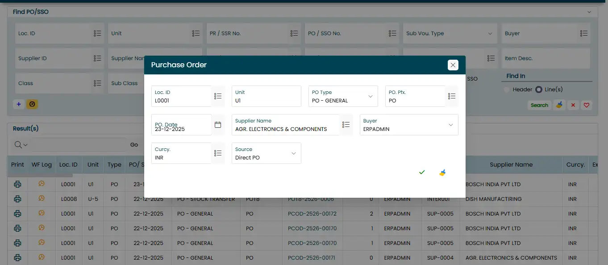

<div data-category="Operating Instructions" data-title="How to add data" data-updated="December 01, 2025" data-contributors="RoadmapIT" data-breadcrumb="Home,Operating Instructions,How to add data">
  <div class="page-content">
    <p>This screen explains the steps required to add data into the application.</p>

    <h5>Navigation path:</h5>
    <p class="fs-6">Operating Instructions \ How to add data</p>

    <!-- Add Data -->
    <h2>How to add data:</h2>
    <ul style="list-style-type: none; align-content: center">
      <li class="mouse-icon">
        Click the add icon
        <i class="bi bi-plus fs-4 mx-2 text-primary"></i>
        .
      </li>
    </ul>
    
    <ul style="list-style-type: none; align-content: center">
      <li class="mouse-icon">Enter or choose the relevant data (Refer: How to use LOV).</li>
      <li class="mouse-icon">
        Click
        <i class="bi bi-check-lg fs-4 mx-1 text-success"></i>
        to save the data.
      </li>
    </ul>
  </div>
</div>
